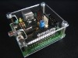
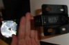

|  |
Preguntas frecuentes sobre la plataforma de contactos
- ¿Cómo puedo construir la plataforma de contactos?
Consulte la sección de hardware en la página multimedia.
- ¿Dónde puedo comprar la plataforma de contactos? ¿Puedo vender la que he hecho yo?
No comercializamos plataformas de contactos, a cambio instamos a los que deseen usar este método a que se fabriquen su propia plataforma. Si algún particular o empresa decide fabricarlas según el método que hemos explicado o cualquier otro que sea compatible y quiere venderlas, puede avisarnos y haremos difusión de su servicio, aunque no nos haremos responsables de la calidad de las mismas.
- ¿Por qué el acero tiene que ser templado?
El acero de la plataforma de contactos va a ser sometido a numerosas fuerzas, si es templado resiste mejor y tiene más capacidad de retorno a su posición inicial.
- ¿Puede usar células fotoeléctricas?
Sí. Consulte la sección de hardware en la página de multimedia.
- He descubierto una manera mejor de hacer la plataforma de contactos ¿dónde puedo anunciarla?
Escribe un correo a la lista chronojump-list y veremos cómo podemos anunciar tu propuesta.
Cronómetro Chronopic
- ¿Dónde puedo comprar el Chronopic?
Acceda a la Tienda de Hardware.
- ¿Puedo construir o fabricar de forma industrial el Chronopic?
Sí, con la información que se encuentra en la página de Hardware
Ver vídeos y dcumentos en la sección de hardware de la página: multimedia.
Usted puede fabricar el Chronopic de forma manual o industrial en cualquier país.
- ¿Puedo vender el Chronopic?
Sí, al precio que consideres oportuno. Cabe considerar la licencia del hardware: Creative Commons. Reconocimiento-Compartir bajo la misma licencia 2.5 España.
- ¿Es posible anunciarse en vuestra web como distribuidor de Chronojump y/o Chronopic?
Sí, escriba a la dirección que se ve en esta imagen:

- Puedo conectar más de un Chronopic a un ordenador?
Sí.
- Un Chronopic es suficiente para captar estímulos de uno o más dispositivos de medida (como plataformas de contacto) siempre que no se produzca contacto en diversos dispositivos al mismo tiempo. Si desea medir el tiempo de contacto y el tiempo de vuelo en la marcha, no podrá diferenciar entre un pie y el otro con sólo un Chronopic aunque tenga una plataforma de contacto para cada pie.
-
Con dos o más Chronopics podrá captar canales diferentes. En el ejemplo del análisis de la marcha, podrá ubicar un dispositivo de medida para cada pie, conectando cada dispositivo a un Chronopic y conectando ambos Chronopics a un ordenador. Esta característica es nueva de Chronojump 0.9.
- ¿Por qué es necesario un cronómetro si cualquier ordenador puede hacer esa función?
Los sistemas operativos modernos son multitarea, lo que significa que el ordenador asigna pequeñas cantidades de tiempo para la realización de cada una de las tareas de manera que parece que ejecuta todas a la vez. Si el ordenador se encarga de captar los estímulos que proceden de la plataforma de contactos, en ocasiones será tardío en advertir estos eventos porque estará ocupado en otros asuntos, lo que se traduce en problemas de fiabilidad debido a que dos saltos de la misma duración podrían obtener mediciones distintas por circunstancias aleatorias.
El cronómetro externo que hemos construido está especializado en la captación de eventos en la plataforma de contactos por lo que no aparecerán errores de fiabilidad en sus registros.
Chronopic permitirá además que se pueda usar Chronojump o su versión reducida Chronojump-mini en casi cualquier dispositivo electrónico, y asegura una buena compatibilidad hacia el futuro.
Para más información lea este artículo: "Proyecto Chronojump: Sistema de Medida de la Capacidad de Salto usando Software y Hardware Libres".
|
 |